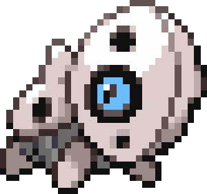
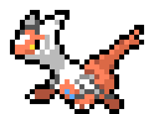
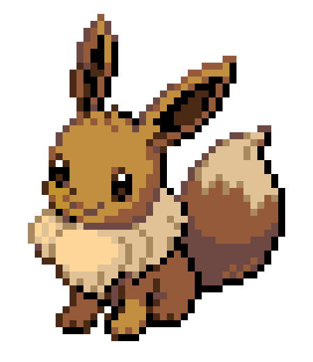

Tipos de Pokemons
El tipo de un Pokémon es su característica principal además de su forma, color y peso.
En el Pokédex podemos encontrar una clasificación por los diversos tipos.
En las nuevas generaciones nos podremos encontrar con una nueva forma de Pokémon que tienen doble tipo,
a pesar de que en versiones anteriores haya habido ejemplos mas básicos como Dragonite, Pidgeotto,
Altaria, etc.
Existen un total de 19 tipos, los cuales son: Acero, Agua, Bicho, Dragón, Eléctrico, Fantasma,
Fuego, Hada, Hielo, Lucha, Normal, Planta, Psíquico, Roca, Siniestro, Tierra, Veneno, Volador, y ???
(Este último solo aparece en casos específicos y en general no pertenece a ningún Pokémon).
Pokedex!

Entra a nuestra pokedex interactiva y
descubre informacion sobre tus pokemons favoritos
Acero

Los Pokémon de tipo acero destacan por tener altas defensas, pero también por poseer poca velocidad.
No se pueden envenenar en condiciones normales y no reciben daño por tormentas de arena.
Son muy buenos luchadores; los ataques físicos raras veces les causan mucho daño.
Su punto débil puede resultar ser la velocidad y la debilidad a los ataques de tipo fuego, tierra y
lucha.
Los Pokémon de este tipo se ubican principalmente en cuevas y cavernas, aunque hay algunos que se
pueden encontrar en zonas urbanas como fábricas o centrales eléctricas; como ejemplo, Skarmory suele
habitar en zonas donde cae ceniza.
Agua
Se dice que es puro y que suele adaptarse a cualquier situación o condición climática,
ya que el agua puede adoptar cualquier forma en cualquier momento. Por ejemplo, en un vaso adopta una
forma, mientras que, en un cubo, adopta otra distinta. Por eso, los Pokémon de tipo agua se sienten a
menudo libres en cualquier sitio donde haya agua a su disposición. La mayoría de estos Pokémon
pertenecen también a otros tipos. Por esto, se dice que los Pokémon de agua son muy adaptables y
su dinamismo los hace destacarse en concursos, presentaciones y evasión de ataques. Como viven en
el agua, muchos de ellos están provistos de aletas.
Los Pokémon de agua resultan poco eficaces y débiles frente al tipo planta. Sin embargo, muchos
Pokémon de agua son también tipo hielo o pueden aprender ataques de hielo, que resultan efectivos
contra los de planta, disminuyendo así su desventaja de tipo. El otro tipo elemental que representa
una amenaza para los Pokémon de agua es el eléctrico, exceptuando casos como Swampert, que poseen el
tipo tierra como secundario, otorgándoles inmunidad.
Algunos Pokémon del tipo agua necesitan la piedra agua para evolucionar.
Bicho
Este grupo de Pokémon se caracteriza por su crecimiento rápido, ya que, en general, no tardan mucho en
evolucionar. Viven primordialmente en los bosques y zonas cercanas a estos, algunos son un poco más
difíciles de divisar debido a que se encuentran en copas de árboles donde anidan. Muchos de los Pokémon
de tipo bicho tienen como tipo secundario volador, lo cual los hace más resistentes a los ataques del tipo
planta y tipo lucha, pero los hace más débiles al tipo roca.
A partir de la quinta generación, se puede ver que es el tipo que prefieren los artistas, debido,
principalmente, a que suelen ser de bonitos colores y de carácter estoico y alegre, por lo que podría
decirse que personifican la belleza de la naturaleza.
Dragon

Es un tipo elemental ancestral, suelen ser Pokémon que cuesta capturar y/o ver, la mayoría de estos
Pokémon suelen vivir en cavernas y/o lagos. La mayoría de estos Pokémon suelen ser Pokémon legendarios.
Los movimientos de tipo dragón solo son efectivos contra Pokémon de su propio tipo, el tipo Dragón.
Por lo tanto, es después del tipo normal el tipo con menos fortalezas contra otros tipos, no existiendo
nunca un Pokémon con doble desventaja a él. En la sexta generación, se le incluye una nueva debilidad, el
tipo hada.
Electrico
Los Pokémon de tipo eléctrico tienen hábitats variados, desde bosques y praderas,
hasta ciudades y centrales eléctricas. Los Pokémon de tipo dragón, eléctrico y planta son resistentes al
tipo eléctrico, y aún más los de tipo tierra, quienes son inmunes a los ataques eléctricos.
Por consiguiente, los Pokémon eléctricos deben de ser muy precavidos con los ataques de tipo tierra,
el cual representa su única debilidad.
Los Pokémon de tipo eléctrico almacenan electricidad estática en sus cuerpos y luego la liberan en forma
de rayos por diferentes partes: mejillas, colas, orejas o antenas. Pero, cuando un Pokémon de este tipo
absorbe demasiada electricidad (ya sea por tormentas eléctricas o por aparatos que funcionen con
electricidad), puede llegar a ser muy peligroso, debido a que tiene demasiada energía contenida en su
interior que no puede ser liberada en poco tiempo, haciéndolos enfermar. Cuando eso pasa, hay que quitarles
la electricidad en exceso a la mayor brevedad posible antes de que, en el peor de los casos, el Pokémon
se sobrecargue y explote.
Fantasma
Se caracteriza por ser un tipo con pocos Pokémon y movimientos; y, también, porque sus Pokémon poseen,
generalmente, pocos PS (a excepción de Drifblim, Giratina, Jellicent, Annihilape y algunos más),
principalmente, Shedinja (con tan solo un punto de PS). En combate resultan muy útiles, ya que poseen dos
inmunidades: el tipo lucha y el tipo normal, de las cuales los ataques de estas son muy comunes, pero, a
pesar de que el tipo fantasma es inmune al tipo normal, a su vez, los fantasmas son inútiles también
contra los normales. A partir de la sexta generación, no les afectan movimientos ni habilidades que
impiden escapar al Pokémon de los combates, como bloqueo o sombra trampa.
Los Pokémon que pertenecen al tipo fantasma, generalmente, se relacionan con el terror, lo oscuro y el más
allá. Suelen vivir en casas abandonadas, cementerios, torres fúnebres y lugares oscuros e inhabitados.
Gran parte de estos Pokémon esbozan una sonrisa siniestra y tenebrosa. Otra característica de los Pokémon
fantasma, es que son, extremadamente, traviesos; y les encantan gastarles bromas pesadas a los humanos y
otros Pokémon. También, les encantan ver la cara de miedo de las personas que invaden su territorio.
Lo curioso de estos Pokémon es que, cuanto más miedo se les tenga, estos lo absorberán y serán más fuertes.
Fuego
Los Pokémon de tipo fuego basan sus ataques, principalmente, en el control de este elemento; y la mayoría
pueden quemar al Pokémon oponente, mientras que ellos no sufren quemaduras.
Son apasionados y, algunos, de mal carácter (como el Charizard de Ash); viven en cuevas o zonas rocosas y
muy áridas; y, más probable, aun cerca de volcanes activos. Sin embargo, los únicos Pokémon que
aparentemente suelen andar por lugares verdes como las praderas, son Ponyta y Rapidash, pudiendo ser que
estos lugares les permiten galopar sin obstáculos. También, algunos son más dóciles, como Growlithe,
Vulpix y sus respectivas evoluciones.
Muchos de estos Pokémon desprenden llamaradas de sus cuerpos, lo cual, aparentemente, no les incomoda; y,
dependiendo de su estado de ánimo, puede que estas llamas se aviven o disminuyan.
Algunos Pokémon de este tipo evolucionan con una piedra evolutiva llamada piedra fuego, como Vulpix,
Pansear y Growlithe, incluyendo a Eevee, que, a pesar de no ser tipo fuego, evoluciona a Flareon; que sí
es de este tipo.
Entrenadores famosos de tipo fuego incluyen a Blaine, el penúltimo líder de gimnasio de Kanto; Candela la
cuarta líder de la región de Hoenn; Fausto el tercer miembro del Alto Mando en la región Sinnoh; Zeo, uno
de los 3 primeros líderes del primer gimnasio en la región Teselia; Malva como un miembro del Alto Mando
de Kalos; Kiawe un capitán de Alola; y Naboru tercer líder de gimnasio de la región de Galar.
Hada
El tipo hada representa, principalmente, la pureza, la luz, el bien y el poder mágico, siendo esto lo más
característico de esta especie. Se suelen encontrar, principalmente, en zonas al aire libre, rodeadas de
flores o elementos similares. Fue introducido para equilibrar el poder superior de los Pokémon de tipo
dragón, tal como se hizo en la segunda generación con los tipos acero y siniestro. Por lo general, son
Pokémon con un nivel alto de defensa especial, como Sylveon, Mr. Mime, Carbink o Florges; además, la mayor
parte posee un nivel alto de PS como Wigglytuff, Azumarill o Aromatisse; sin embargo, la mayoría cuenta
con un valor de ataque muy bajo, como Whimsicott, Togekiss o Tinkaton. Otra particularidad es que la
mayoría de los Pokémon de tipo hada, pueden aprender el movimiento deseo; tal vez debido a la idea de que
las hadas pueden cumplir deseos o sueños. El tipo veneno representa su máxima debilidad junto con el tipo
acero. Al contrario de los Pokémon de tipo psíquico, que usan sus ataques con el poder de su mente, estos
usan poderes sobrenaturales y místicos. La mayoría de los Pokémon de este tipo son de aspecto tierno y
suave, pero a la vez son muy poderosos.
Hielo
Destacan por su gran resistencia y adaptación al medio frío o glaciar, como son las cimas de las montañas,
las cavernas y cuevas heladas, o incluso los polos. Tienen la capacidad de congelar al enemigo en combate,
mientras que ellos no pueden padecer dicho estado. Además, pueden realizar ataques devastadores, como frío
polar, al cual son inmunes. No reciben daño por granizo.
Muchos Pokémon de este tipo representan seres vivos que se encuentran en regiones y paisajes helados, como
lo son: osos polares, focas, leones marinos y morsas.
Lucha
Este tipo de Pokémon son especialistas en el combate cuerpo a cuerpo, se podría decir que son opuestos a
los del tipo psíquico, ya que, estos últimos, dependen del ataque especial; mientras que los del tipo lucha
se especializan en ataque físico. En su mayoría, sus características están equilibradas (como Hitmontop o
Medicham) o si no, son veloces luchadores con grandes puntos de ataque (como Lucario e Infernape). Su
desarrollo varía: de veloz desarrollo como Monferno a Infernape; o tardíos en su desarrollo como Croagunk
a Toxicroak. Algunos incluso requieren diversas condiciones para evolucionar (Tyrogue necesita igualar su
ataque con su defensa para evolucionar en Hitmontop, Riolu evoluciona de día mediante la amistad, y
Poliwhirl necesita la piedra agua).
El hecho de que varios Pokémon de tipo lucha evolucionen de métodos especiales, hacen referencia a los
viajes internos que realizan los luchadores en busca de conocimiento para triunfar o de la paz interior.
Independientemente de esto, el tipo lucha es el tipo con más ventajas frente a otros tipos, junto con el
tipo tierra, teniendo un total de 5.
Entre los entrenadores famosos en la serie, se encuentran: el maestro del dojo de karate de ciudad Azafrán
Karateka Kiyo; Bruno; el segundo miembro del Alto Mando en Kanto y Johto; Aníbal el quinto líder de gimnasio
de Johto; Marcial el segundo líder de gimnasio de Hoenn; Brega; la tercera líder de gimnasio de Sinnoh
(cuarta en Pokémon Platino); Lotto, un miembro del alto mando de Teselia; Corelia, la tercera lider de
gimnasio en Kalos; Kaudan, el primer Kahuna y posteriormente un miembro del alto mando de Alola; y Judith,
cuarta líder de gimnasio de Galar (en Pokémon Espada).
Normal

El tipo normal abarca la mayor cantidad y variedad de movimientos que el resto de tipos.
Gran parte de estos son movimientos que no realizan daño o no lo hacen directamente, sino que afectan a las
características o estados del Pokémon.
Los tipos normal son los más diversos entre los Pokémon, con características variadas, desarrollos y
requisitos para las evoluciones diferentes de cada uno, al igual que diferir en las zonas donde se pueden
capturar, desde bosques, cuevas, montañas, ciudades, etc.
El tipo normal (junto al tipo eléctrico) es el tipo puro que posee menos debilidades con solo una, el tipo
lucha; pero al mismo tiempo es el tipo con menos fortalezas, ya que no es efectivo contra ningún tipo
elemental de Pokémon.
Los entrenadores más reconocidos de este tipo son: Blanca, la tercera líder de gimnasio en la región Johto;
Norman, el quinto líder de gimnasio en la región Hoenn; Aloe, la segunda líder de gimnasio en la región
Teselia; Cheren como reemplazo de Aloe en los videojuegos Pokémon Negro 2 y Blanco 2; en Alola el capitán
Liam; y Laureano en la región de Paldea.
Planta

A los Pokémon de tipo planta les gusta cuidar de las flores y a los demás, pero también son grandes
luchadores y son expertos en cambios de estado, pudiendo envenenar, paralizar o dormir al rival en combate,
mientras que ellos son inmunes a drenadoras pero también a movimientos con esporas y polvos.
Normalmente, su cuerpo suele ser igual a alguna especie vegetal. Estos Pokémon suelen desarrollar hojas,
flores, entre otros que tienen un crecimiento propio, pero que son controladas por el Pokémon. Otra cosa
que caracteriza a los Pokémon de tipo planta es que varios de sus movimientos permiten recuperar puntos de
salud; como arraigo, drenadoras o síntesis.
Psiquico
A él pertenecen un número considerable de Pokémon, siendo el tipo con mayor número de Pokémon legendarios,
con 17 en total. Los Pokémon de este tipo suelen ser muy inteligentes y, a menudo, se les atribuye capacidades
como prever acciones futuras, hacer levitar objetos o incluso a ellos mismos.
Se puede localizar a este tipo de Pokémon en cuevas o zonas cercanas a estas. Por ejemplo: Abra se puede
capturar en la Cueva Granito; y Chimecho se puede capturar en la cima del Monte Pírico, en el lado exterior
(ambos en la tercera generación).
Durante la primera generación solo tenían como debilidad el tipo bicho, pues no existía todavía el tipo
siniestro, y eran inmunes al tipo fantasma.
Roca
El tipo roca destaca por su gran defensa frente a ataques físicos. Sin embargo, tiene en su contra que
presenta varias debilidades con respecto a otros tipos, y los Pokémon de este tipo no se caracterizan por
ser muy veloces. Cabe destacar que, la mayoría de los movimientos de tipo roca (sobre todo los físicos),
poseen baja precisión a la hora de atacar.
Los Pokémon de tipo roca no reciben daño por tormentas de arena y, a partir de la cuarta generación, su
defensa especial aumenta en un 50% durante la tormenta.
Los Pokémon prehistóricos descubiertos hasta la octava generación, pertenecen a este tipo. Eso es debido
a que, la única forma de recuperarlos, es mediante sus fósiles, que son antiguos restos orgánicos
petrificados en la corteza terrestre. Estos fósiles preservan suficiente material genético para ser
revividos; y nos entregan a unos Pokémon primitivos, teniendo la mayoría la característica común de ser
todos del tipo roca. Así que, gracias a este método de conservación, los Pokémon revividos poseen algunas
combinaciones de tipos únicas, que no pueden ser halladas en ningún Pokémon moderno, como roca/planta o
roca/hielo.
Los entrenadores más conocidos de este tipo son: Brock, el primer líder de gimnasio de Kanto; Petra, la
primera líder de gimnasio de Hoenn; Roco, el primer líder de gimnasio de Sinnoh; Lino, en Kalos, el
segundo líder de gimnasio; Mayla, la segunda Kahuna y miembro del Alto Mando en Alola; y Morris, el sexto
líder de gimnasio en Galar.
Siniestro
Como bien indica su nombre, representan la oscuridad y la maldad, asimismo, puede simplemente tratarse de
criaturas más acostumbradas a la noche que al día.
Los Pokémon de tipo siniestro son, en su mayoría, agresivos y misteriosos; por lo tanto, encontrar un tipo
siniestro es un poco complicado. Fueron agregados en la segunda generación para presentar una debilidad
ante el tipo psíquico, que, hasta entonces, sólo tenía el tipo bicho (cuyos movimientos no representaban
una amenaza) y el tipo fantasma (situación parecida respecto a los movimientos).
Suelen ser de carácter malicioso, cruel, fríos y astutos. Independientemente de esto, no son necesariamente
malvados. Absol, por ejemplo; tiene fama de ser un mal presagio, cuando, en realidad, alerta a las personas
de desastres próximos.
Los tipo siniestro, generalmente, están basados en animales de la vida real que, por lo normal, resultan
intimidantes y aterradores, como lo son: lobos, pirañas, tiburones, escorpiones, cocodrilos y hasta grandes
felinos.
A estos Pokémon les cuesta formar lazos de amistad con entrenadores, pero, al formar uno, debido a la
barrera moral que rompen al hacerlo, este lazo jamás será roto, siendo muy fieles a su entrenador e incluso
dando su vida por él.
A partir de la séptima generación, los Pokémon de tipo siniestro son inmunes a movimientos de la categoría
estado que hayan sido lanzados por Pokémon que posean la habilidad bromista.
Los Pokémon del tipo siniestro, a partir de la segunda generación, junto a los veneno, son,
mayoritariamente, usados por los villanos del juego.
Los entrenadores más reconocidos del tipo siniestro son: Karen, cuarta miembro del Alto Mando de Johto;
Sixto, primer miembro del Alto Mando de Hoenn; Aza, un miembro del Alto Mando de Teselia; Denio, el kahuna
de la isla Ula-Ula en Alola; y Nerio, líder de gimnasio de Galar, ubicado en Pueblo Crampón.
Tierra
Los Pokémon de este tipo tienen temor al tipo agua, igual que los de tipo roca, pero, a partir de la
segunda generación hay excepciones, como es el caso de Wooper y Quagsire, que son de tipo agua y tierra
a la vez; también, están Marshtomp, Swampert, Whiscash, Gastrodon, Palpitoad y Seismitoad.
Estos Pokémon se pueden hallar en cuevas o zonas rocosas, con excepción de algunos de doble tipo. Groudon,
Landorus, y Zygarde son los únicos Pokémon legendarios de este tipo. Una desventaja de este tipo es que,
muchos de ellos, no pueden despegarse del suelo, como Diglett; por eso los Pokémon de tipo volador son
inmunes a la mayoría de los ataques de este tipo, al igual que los Pokémon que tengan la habilidad
levitación. Pero muchos de ellos aprenden movimientos de tipo roca, que son muy eficaces al tipo volador.
Los Pokémon de tipo tierra destacan por ser inmunes ante ataques tipo eléctrico y no reciben daño por
tormentas de arena. Son buenos combatientes y poseen ataques sumamente devastadores, como fisura y
terremoto; entre otros.
Entre los entrenadores que se especializan en este tipo se encuentran Giovanni, último líder de gimnasio
en Kanto, además de haber sido líder del Team Rocket; Gaia, la segunda miembro del Alto Mando de Sinnoh;
Yakón, el quinto líder de gimnasio de Teselia; Hela, la kahuna de la isla Poni en Alola; y Cayena, la
primera miembro del Alto Mando de Paldea.
Veneno
El tipo veneno es frecuente en Pokémon; suele encontrarse en zonas donde hay cuevas, pantanos o en sus
cercanías. Muchos Pokémon de este tipo pueden expulsar de sus cuerpos distintas sustancias nocivas como
gases, ácidos, venenos, esporas u olores malolientes. También, los Pokémon del tipo veneno están basados
en seres vivientes que son, generalmente, venenosos. Por ejemplo: serpientes, arañas, ranas, insectos,
plantas y hongos; y, también, en objetos contaminantes como lodo y bolsas de basura.
Un Pokémon de tipo veneno no puede ser envenenado (excepto si evoluciona de un Pokémon que ya estaba
previamente envenenado). Y un Pokémon de tipo veneno que no sea de tipo volador ni tenga la habilidad
levitación, anula el efecto de púas tóxicas de modo que, ningún Pokémon resultará envenenado al entrar
al campo de combate.
Una característica muy curiosa que tienen algunos de los Pokémon del tipo veneno es su similitud con los
ninjas, además de que, en la primera generación, el líder especialista en este tipo, es un ninja; muchos
Pokémon siguen este concepto: Koffing, parecido a una bomba de humo; Crobat, y su velocidad y sigilo; o
Toxicroak, con sus zarpas en las muñecas. Esta característica se ve reforzada por el hecho de que una de
las características más favorables de este tipo es la velocidad.
Hay 6 expertos en Pokémon de tipo veneno: Koga, un líder de gimnasio y más tarde Alto Mando de la Liga
Pokémon de Kanto; Sachiko e Hiedra, unas líderes de gimnasio; Ponzi, un participante del Supertorneo Tipo:
Veneno, Francine, la comandante del Team Skull y Sófora, rival del jugador en el DLC La isla de la armadura,
solo en Pokémon Espada y líder de gimnasio en el DLC Nieves de la Corona.
Una de las principales características generales de los Pokémon de tipo veneno es que su piel o cuerpo es,
generalmente, de color morado, excepto los de tipo veneno secundario.
Volador
Los Pokémon de tipo volador son rápidos y con ataques que normalmente son de contacto físico, o en los que
utilizan el viento a su favor. En su mayoría, los Pokémon de tipo volador poseen alas, aunque hay
excepciones; como Rayquaza y Gyarados, que siempre flotan sin poseer ni alas ni plumas; o Tornadus,
Thundurus y Landorus, que montan sobre nubes. Son inmunes al tipo tierra, puesto que, al volar, los
ataques de este tipo (salvo ataque arena y mil flechas) no les afectan. Tampoco pueden ser envenenados
al entrar a un campo de combate con púas tóxicas ni recibir daño de púas.
Los Pokémon de tipo volador tienen algunas desventajas. Los Pokémon eléctricos pueden paralizar a los
Pokémon voladores haciéndolos caer bruscamente. Los Pokémon de tipo hielo pueden congelar sus alas con
la misma consecuencia final que los Pokémon eléctricos. Los Pokémon de tipo roca son tan duros que los
ataques de los voladores no les producen apenas daño, y vemos que los tipo planta y bicho son los más
débiles frente a los voladores (por su dieta en la vida real).
Los Pokémon con la habilidad alas vendaval aumentan +1 la prioridad normal de los movimientos de tipo
volador del usuario siempre y cuando este tenga sus HP al máximo (Siempre antes de la séptima generación),
lo que significa que, casi siempre, van a atacar antes que otros Pokémon, sin importar su velocidad.